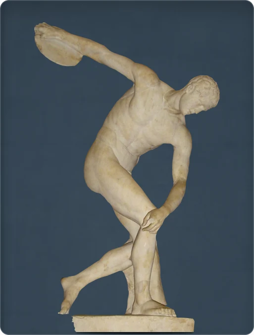

Discobolus

The moment before the throw
In the Discobolus, the athlete pauses just before releasing his discus. This Roman marble copy follows a lost Greek bronze attributed to Myron in the fifth century BCE. His bent torso and sweeping arm hold the movement in balance. The head was incorrectly positioned during restoration: it should turn towards the discus.
2nd century CE · marble · British Museum, London · inv. 1805,0703.43
Record: British Museum →
Additional source: Cambridge Museum of Classical Archaeology
Photo credit
Photo: Valerio Perticone / Wikimedia Commons · CC BY-SA 3.0 · background edited
Modified image licence: CC BY-SA 3.0

From torso to arm
Follow the bend of the torso, then look along the arc of the arm. The torso gives you a way to read the position of the body. The arm lets you imagine the direction of the gesture. Look at how these two lines work together. They make the pose legible as a movement about to begin.
Find the discus and pause at the hand. The discus is still part of the pose we see, while its path through the air is left to the imagination. That interval gives the gesture its meaning. Watching the athlete hold the movement helps us understand what he is about to do.
Which way the head turns
The notice identifies an issue with the restoration. The head should turn towards the discus. First look at the angle of the head in the photograph, then return to the arm. Compare the direction of the face with the direction of the gesture and see how the difference affects your reading.
Now imagine the head turned towards the discus while keeping the photographed pose in mind. Does that arrangement make the movement easier to follow with your eye? The comparison shows why a decision made during restoration matters to how we understand a sculpture centred on a single moment in a gesture.
Reading a Roman marble copy
The marble in the notice is a Roman copy. The attribution to Myron belongs to the lost Greek bronze that the copy follows. Keeping the two works distinct lets you describe details visible in the marble and identify the earlier work to which the pose is linked.
The notice links to the British Museum record for the marble and lists the Cambridge Museum of Classical Archaeology as an additional source. Look first at the bent torso and the arm. Then use the references to place the copy in time and compare its date with the period given for the bronze.